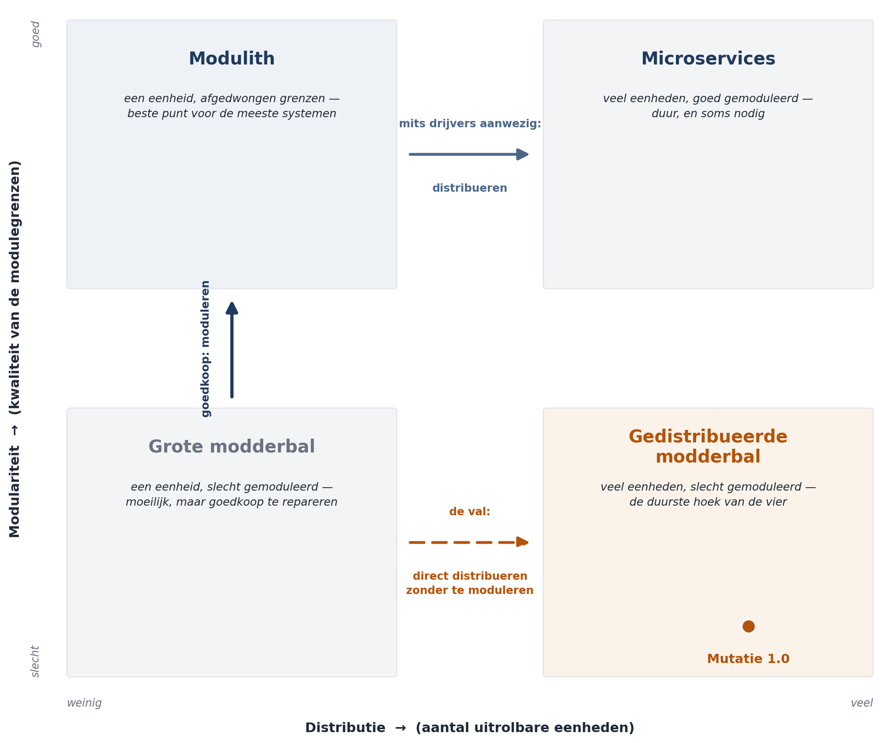

Deel 5 — Architectuurstijlen II
Deelnemersreader
Cursus Softwarearchitectuur · Niveau 1 (CPSA-F) · Deel 5 van 10
Positionering
Voorbereiding op iSAQB® CPSA-F. Geen vervanging van het officiële curriculum en examenmateriaal van het iSAQB. Technologieneutraal; arc42 + C4 als referentienotatie, Structurizr als referentietool. Zelfstandig leesbaar; kruisverwijzingen naar de Ductus-cursus Business & Enterprise Architectuur zijn aangeduid met ↗ EA.
Leerdoelen van dit deel
Na dit deel kunt u:
- het onderscheid maken tussen modulariteit en distributie, en uitleggen waarom die twee vragen los van elkaar beantwoord moeten worden;
- monoliet, modulith en microservices beschrijven met hun werkelijke kosten en baten;
- de vier drijvers benoemen die een echt argument voor distributie vormen, en de argumenten herkennen die dat niet zijn;
- de gevolgen van distributie voor consistentie, foutafhandeling en waarneembaarheid benoemen;
- event-driven architectuur beschrijven, met het onderscheid tussen gebeurtenismelding en gebeurtenisgedreven statusoverdracht;
- het onderscheid maken tussen orkestratie en choreografie en een keuze daartussen verdedigen;
- bevinding B4 uit de post-mortem Mutatie 1.0 sluiten.
Dekking CPSA-F: dit deel dekt de leerdoelen over gedistribueerde architectuurstijlen en hun eigenschappen, en legt de basis voor de verdiepende modules in niveau 2 (deel 13 en 14).
5.1 De vraag die vandaag aan de orde is
Deel 4 ging over structuur: hoe is het systeem van binnen ingedeeld, waar zit de logica, welke kant wijzen de afhankelijkheden. De uitkomst was hexagonaal, met de mutatiesoort als indelingsas en de integratie afgezonderd.
Vandaag gaat het over iets anders: in hoeveel afzonderlijk uitrolbare eenheden valt dat systeem uiteen?
Dat is een andere vraag, met andere kosten en andere baten. U kunt een uitstekend gemoduleerd systeem in één uitrolbare eenheid hebben, en u kunt elf uitrolbare eenheden hebben die van binnen volstrekt verweven zijn. In Mutatie 1.0 was het tweede het geval.
Twee assen, vier hoeken:
| Slecht gemoduleerd | Goed gemoduleerd | |
|---|---|---|
| Eén uitrolbare eenheid | Grote modderbal — moeilijk, maar goedkoop te repareren | Modulith — voor de meeste systemen het beste punt |
| Veel uitrolbare eenheden | Gedistribueerde modderbal — Mutatie 1.0 | Microservices — duur, en soms nodig |
De gedistribueerde modderbal is de slechtste van de vier, en het is geen zeldzaamheid maar de meest voorkomende uitkomst van een ondoordachte distributiebeslissing. U hebt dan alle kosten van het netwerk (latentie, gedeeltelijke uitval, gedistribueerde transacties, elf pijplijnen) én alle kosten van verwevenheid (een wijziging raakt meerdere eenheden), zonder de baten van een van beide.

De belangrijkste les uit dit kwadrant: de weg van linksonder naar rechtsboven loopt via linksboven, niet rechtstreeks. Eerst moduleren, dan pas distribueren. Wie distribueert wat nog niet gemoduleerd is, bevriest de verwevenheid in netwerkkoppelvlakken en maakt haar duurder om op te lossen.
5.2 De monoliet
Een monoliet is een systeem dat als één eenheid wordt gebouwd, uitgerold en gedraaid.
Het woord heeft een slechte klank die het niet verdient. De klank komt van de grote modderbal: een monoliet zonder interne structuur, waarin alles alles aanroept. Maar dat is een modulariteitsprobleem, geen distributieprobleem, en het wordt niet opgelost door de bal op te delen in netwerkverbonden stukken.
Wat een monoliet u geeft:
| Voordeel | Waarom |
|---|---|
| Eenvoudige aanroepen | Een functieaanroep faalt niet halverwege, kost geen milliseconden en heeft geen herpogingsbeleid nodig |
| Echte transacties | Een mutatie en haar audittrail worden samen vastgelegd of samen niet — een garantie die u gedistribueerd niet gratis krijgt |
| Eenvoudig testen | Het hele systeem draait op één machine |
| Eenvoudig waarnemen | Eén logbestand, één stacktrace bij een fout |
| Goedkope refactoring | Een grens verleggen is een verplaatsing in de code, niet een migratie van koppelvlakken |
Dat laatste is het onderschatte punt. In een monoliet zijn uw modulegrenzen goedkoop te corrigeren. Zodra ze netwerkkoppelvlakken zijn geworden, kost een grensverlegging een migratieproject. Wie zijn grenzen nog niet zeker weet — en dat is aan het begin van elk project het geval — heeft in een monoliet de goedkoopste leeromgeving.
Wat een monoliet u kost: één deploymoment voor iedereen, één technologiestapel, één schaaleenheid, en een teamgrootte-plafond. Bij twee teams zijn geen van deze vier bindend; bij twintig teams is de eerste dat wel.
5.3 De modulith
Een modulith is een monoliet met afgedwongen interne modulegrenzen: één uitrolbare eenheid, met daarbinnen modules die uitsluitend via expliciete koppelvlakken communiceren en die hun eigen gegevens bezitten.
Dit is voor de meeste bedrijfssystemen het beste punt op de kaart, en het is het minst besproken. De reden is dat het geen mode is: er valt geen conferentielezing over te geven.
Wat het toevoegt aan de monoliet:
- Modulegrenzen die worden gehandhaafd, niet alleen bedoeld. Handhaving kan met taalmiddelen (pakketstructuur, zichtbaarheid), met bouwstraatcontroles die een verboden afhankelijkheid laten falen, of met een expliciete moduleafbakening in de gebruikte omgeving. Welk middel u kiest is minder belangrijk dan dát het geautomatiseerd is: een grens die alleen in reviews wordt bewaakt, verdwijnt onder deadlinedruk.
- Eigen gegevens per module. Geen gedeelde tabellen tussen modules; wie iets van een andere module nodig heeft, vraagt het via haar koppelvlak. Dit is de moeilijkste en de belangrijkste regel, want juist via de database ontstaat verwevenheid die geen enkel diagram toont.
- Een migratiepad. Een module die zijn eigen gegevens bezit en alleen via een koppelvlak bereikbaar is, is precies wat u later als aparte service kunt uitrollen, als daar aanleiding voor komt. De modulith houdt die deur open zonder de prijs nu te betalen.
Voor Mutatie 2.0 ligt dit voor de hand: de mutatiesoorten uit deel 3 worden modules, de integratie met de kernadministratie wordt een module, en de gebeurtenisopslag ook. Alles in één uitrolbare eenheid, met bewaakte grenzen.
↗ EA — Op landschapsniveau is dit dezelfde afweging als tussen een geïntegreerd pakket en een verzameling gekoppelde applicaties. De EA-cursus behandelt hem als integratie- versus autonomiekeuze; de kostenstructuur is verwant.
5.4 Microservices
Grondvorm. Het systeem bestaat uit kleine, onafhankelijk uitrolbare diensten, elk met eigen gegevens, elk door één team beheerd, communicerend over het netwerk.
De vier echte drijvers
Er zijn precies vier argumenten die distributie rechtvaardigen. Alle andere zijn afgeleiden of vergissingen.
1. Onafhankelijk uitrollen. Delen van het systeem moeten in een eigen ritme in productie kunnen, zonder coördinatie met andere teams. Dit is de sterkste drijver en in de praktijk de enige die op zichzelf voldoende is.
2. Onafhankelijk schalen. Een deel van het systeem heeft een schaalprofiel dat wezenlijk afwijkt van de rest — bijvoorbeeld een rekenintensieve component die honderd keer zoveel capaciteit vraagt dan de rest.
3. Onafhankelijk falen. Een deel mag uitvallen zonder de rest mee te nemen, en die isolatie is met andere middelen niet te bereiken.
4. Onafhankelijke technologie. Een deel vraagt een fundamenteel andere technologie — een rekenbibliotheek die alleen in een andere taal bestaat.
Toets voor Mutatie 2.0. Twee teams zonder groei, één deploymoment per twee weken (de deployfrequentie is een organisatorische keuze, geen technische beperking), geen enkel deel met afwijkend schaalprofiel, geen isolatiebehoefte die niet met een wachtrij op te lossen is, één technologiestapel. Nul van de vier.
Dat is de kern van bevinding B4: er zijn elf services gebouwd zonder dat één van de vier drijvers aanwezig was, met als motivering dat de leverancier microservices als standaard hanteert.
De argumenten die geen drijver zijn
| Argument | Waarom het niet werkt |
|---|---|
| “Het is beter gemoduleerd” | Modulariteit krijgt u met modulegrenzen, niet met netwerkkoppelvlakken. Een modulith geeft hetzelfde zonder de netwerkkosten |
| “Het is moderner” | Dit is de motivering uit Mutatie 1.0, letterlijk |
| “Teams kunnen dan onafhankelijk werken” | Alleen waar als de grenzen goed liggen. Liggen ze verkeerd, dan overleggen teams méér dan voorheen, want nu over koppelvlakken |
| “Het is beter herbruikbaar” | Hergebruik verhoogt afferente koppeling (deel 3); over het netwerk is dat duurder, niet goedkoper |
| “We kunnen dan per service opnieuw beginnen” | Zelden waar; de gegevens en de koppelvlakken blijven |
Wat distributie werkelijk kost
De kosten zijn niet gelijkmatig verdeeld — sommige zijn eenmalig, andere permanent.
Het netwerk is niet betrouwbaar. Elke aanroep kan traag zijn, falen, of erger: slagen zonder dat u het antwoord ontvangt. Dat laatste geval — u weet niet of het gelukt is — bestaat binnen één proces niet en is de bron van de meeste gedistribueerde fouten. Het antwoord erop is idempotentie: elke bewerking moet veilig herhaalbaar zijn. Dat is ontwerpwerk in elke dienst, niet één keer centraal.
Transacties verdwijnen. Binnen één database legt u een mutatie en haar audittrail samen vast, of geen van beide. Over twee diensten heen bestaat die garantie niet. U moet dan werken met patronen als outbox (een gebeurtenis in dezelfde transactie wegschrijven en apart verzenden) of saga (een reeks stappen met compenserende acties). Beide werken, beide zijn ontwerpwerk, en beide maken de foutpaden ingewikkelder dan het gelukkige pad.
Voor Meridiaan is dit geen theoretisch punt. QS-4 vraagt dat een mutatie zeven jaar reconstrueerbaar is inclusief goedkeurder. Als mutatie en audittrail in verschillende diensten leven, moet u aantonen dat ze niet uit elkaar kunnen lopen — en dat bewijs is duurder dan de transactie die u opgaf.
Consistentie wordt uitgesteld. Wat in één database onmiddellijk klopt, klopt gedistribueerd pas na enige tijd. Dat is werkbaar, mits het zichtbaar is voor wie ermee werkt. Onzichtbare uitgestelde consistentie levert de meldingen op die niemand kan verklaren: “ik heb het ingevoerd maar mijn collega ziet het niet”.
Waarneembaarheid moet gebouwd worden. Eén stacktrace wordt elf logbestanden. Zonder gecorreleerde traceringen is een storing niet te volgen — bevinding B7, die in Mutatie 1.0 precies dit gevolg had. Dit is een investering vooraf, niet iets wat u later toevoegt.
Operationele last vermenigvuldigt. Elf pijplijnen, elf versiebeheerlijnen, elf keer omgevingsconfiguratie, en koppelvlakversies die u niet mag breken omdat de andere kant zelfstandig uitrolt. Met twee teams en een beheerafdeling zonder nachtbezetting (randvoorwaarde uit deel 2) is dat een reële belasting.
Wanneer het wél de juiste keuze is
Om het beeld eerlijk te houden: microservices zijn niet fout, ze zijn duur. Waar de vier drijvers aanwezig zijn, betaalt die prijs zichzelf terug — bij veel teams die elkaar in de weg zitten, bij sterk uiteenlopende schaalprofielen, bij delen die een eigen beschikbaarheidsregime nodig hebben. Meridiaan heeft die situatie niet. Een landelijke uitvoerder met veertig teams zou hem kunnen hebben.
5.5 Event-driven architectuur
Grondvorm. Componenten communiceren door gebeurtenissen te publiceren en erop te reageren, in plaats van elkaar rechtstreeks aan te roepen. De publicerende partij weet niet wie luistert.
Dit is een andere as dan monoliet-versus-microservices: u kunt gebeurtenisgedreven werken binnen één uitrolbare eenheid. Het gaat om de communicatievorm, niet om de verpakking.
Twee vormen die vaak verward worden
Gebeurtenismelding. Een korte melding dat er iets is gebeurd: adresmutatie 12345 is goedgekeurd. Wie meer wil weten, vraagt het na. Voordeel: kleine berichten, één bron van waarheid. Nadeel: elke geïnteresseerde doet een terugvraag, wat de koppeling terugbrengt die u wilde vermijden.
Gebeurtenisgedreven statusoverdracht. De gebeurtenis bevat alle gegevens die een ontvanger nodig heeft. Voordeel: geen terugvragen, ontvangers zijn onafhankelijk. Nadeel: gegevens worden gedupliceerd, en u moet een antwoord hebben op de vraag welke kopie geldt.
Het onderscheid is belangrijk omdat de tweede vorm precies de fout uit sprint 4 van Mutatie 1.0 dicht bij komt: elke service een eigen kopie. Het verschil zit erin dat een gebeurtenisstroom de kopieën binnen seconden bijwerkt en de volgorde vastlegt, terwijl een nachtelijke export dat niet doet. De vorm is verwant; de eigenschappen zijn onvergelijkbaar. Dat is een nuttige waarschuwing tegen het beoordelen van een ontwerp op zijn vorm.
Gebeurtenissen als geheugen
De sterkste toepassing voor deze casus is niet de communicatie maar de vastlegging. Wanneer u elke betekenisvolle verandering vastlegt als een onveranderlijke gebeurtenis — mutatie ingediend, aanvullende gegevens opgevraagd, goedgekeurd door medewerker X, doorgegeven aan kernadministratie — dan is de mutatiegeschiedenis geen bijproduct maar de bron zelf.
Dat dient QS-4 rechtstreeks: zeven jaar reconstrueerbaar, inclusief goedkeurder, is dan geen aparte voorziening maar een eigenschap van de opslag. Het is ook wat in Mutatie 1.0 ontbrak: daar werd de eindtoestand bewaard, waardoor de vraag “waarom kreeg deze deelnemer op deze datum dit bedrag” achteraf niet volledig te beantwoorden was.
De prijs is reëel en hoort in de afweging: de opslag groeit, het lezen van een actuele toestand vraagt een afgeleid leesmodel, en het model is voor ontwikkelaars ongewoon. De volledige uitwerking hiervan — event sourcing en CQRS — hoort in niveau 2 (deel 14). Wat u op dit niveau moet kunnen, is de afweging benoemen: eindtoestand is eenvoudiger, gebeurtenissen zijn aantoonbaar.
Orkestratie of choreografie
Bij samengestelde processen — een scheidingsmutatie raakt meerdere partijen en loopt over weken — zijn er twee coördinatievormen:
Orkestratie. Eén component stuurt het proces aan en kent de volgorde. Voordeel: het proces is op één plek zichtbaar, de status is opvraagbaar, fouten hebben een eigenaar. Nadeel: de orkestrator wordt een centraal punt dat bij elke procesuitbreiding wijzigt.
Choreografie. Elke component reageert op gebeurtenissen en niemand kent het geheel. Voordeel: componenten toevoegen zonder een centrale plek te wijzigen. Nadeel: het proces bestaat nergens in beschrijfbare vorm; de vraag “waar staat deze scheiding nu?” is alleen te beantwoorden door de gebeurtenissen van vijf componenten te reconstrueren.
Voor Meridiaan is orkestratie de verdedigbare keuze, en de reden is niet technisch. Een van de drie programmadoelen is één statusbeeld met controleerbare doorlooptijden, en de toezichthouder moet kunnen zien waar een dossier staat. Een proces dat nergens beschreven staat, is niet aantoonbaar. Choreografie is elegant waar niemand het geheel hoeft te overzien; hier moet iemand dat juist wel.
5.6 De beslissing voor Mutatie 2.0
Alles bij elkaar:
| Vraag | Keuze | Grond |
|---|---|---|
| Interne structuur | Hexagonaal, ingedeeld naar mutatiesoort | Deel 3 en 4 |
| Distributie | Eén uitrolbare eenheid — modulith | Nul van de vier drijvers aanwezig; twee teams; beheer zonder nachtbezetting |
| Modulegrenzen | Geautomatiseerd gehandhaafd, eigen gegevens per module | Houdt latere splitsing open zonder de prijs nu te betalen |
| Vastlegging | Gebeurtenissen als bron voor de mutatiegeschiedenis | QS-4; het gebrek in Mutatie 1.0 |
| Coördinatie | Orkestratie voor samengestelde mutaties | Eén statusbeeld, aantoonbaarheid richting toezicht |
| Doorgifte kernadministratie | Asynchroon, via de aangedreven poort uit deel 4, met idempotente doorgifte | QS-1 tegen de limiet van 20 aanroepen per seconde |
De herzieningsgrens (deel 2) hoort erbij: deze distributiekeuze wordt heroverwogen zodra het aantal teams boven de vier komt, of zodra een module aantoonbaar een afwijkend schaal- of beschikbaarheidsprofiel krijgt. Dat is niet waarschijnlijk binnen de programmaperiode, en het is precies daarom dat de keuze nu verdedigbaar is.
5.7 B4 gesloten
Bevinding B4 luidde: de gekozen architectuurstijl past niet bij het probleem. Met deel 4 en 5 samen is die te sluiten, en het loont de fout precies te benoemen — hij is namelijk niet “microservices”.
De fout was in drie stappen:
- De vraag is niet gesteld. Er is nooit onderzocht welke drijvers aanwezig waren. Was dat wel gebeurd, dan was de uitkomst nul van vier geweest, en dat is een gesprek van een middag.
- Twee vragen zijn samengevoegd. De distributiebeslissing is genomen als structuurbeslissing. Daardoor ontstond distributie zonder modularisering: de gedistribueerde modderbal.
- De kosten zijn wel betaald. Elf pijplijnen, netwerkfouten, geen transactie tussen mutatie en audittrail, en storingen die over elf logbestanden niet te volgen waren — dat is B7 en het is een rechtstreeks gevolg van deze beslissing.
Wat de bevinding niet zegt. Zij zegt niet dat microservices verkeerd zijn, en zij zegt niet dat de leverancier incompetent was. Zij zegt dat een stijl is toegepast zonder de vraag te stellen waarop hij het antwoord is. Diezelfde fout is met een modulith even goed te maken: wie vandaag de modulith kiest omdat deze reader hem aanbeveelt, in plaats van omdat nul van de vier drijvers aanwezig is, heeft niets geleerd — alleen een andere mode overgenomen.
Dat is de eigenlijke inhoud van B4, en het is de reden dat deze twee delen samen genomen worden.
Samenvatting
- Modulariteit en distributie zijn twee onafhankelijke assen. De gedistribueerde modderbal — slecht gemoduleerd én verdeeld — is de duurste hoek, en de meest voorkomende uitkomst van een ondoordachte distributiebeslissing.
- Eerst moduleren, dan pas distribueren. In een monoliet zijn grenzen goedkoop te corrigeren; als netwerkkoppelvlak kost een grensverlegging een migratieproject.
- De monoliet geeft eenvoudige aanroepen, echte transacties, eenvoudige waarneming en goedkope refactoring. Zijn slechte naam komt van de grote modderbal, wat een modulariteitsprobleem is.
- De modulith — één uitrolbare eenheid met geautomatiseerd gehandhaafde modulegrenzen en eigen gegevens per module — is voor de meeste bedrijfssystemen het beste punt, en houdt latere splitsing open.
- Er zijn vier echte drijvers voor distributie: onafhankelijk uitrollen, schalen, falen en technologie kiezen. Mutatie 2.0 heeft er nul.
- Distributie kost onbetrouwbare aanroepen, verdwenen transacties, uitgestelde consistentie, gebouwde waarneembaarheid en vermenigvuldigde operationele last.
- Gebeurtenisgedreven werken is een communicatievorm, geen verpakkingsvorm. De sterkste toepassing hier is vastlegging: eindtoestand is eenvoudiger, gebeurtenissen zijn aantoonbaar.
- Orkestratie boven choreografie waar iemand het geheel moet kunnen overzien — bij aantoonbaarheid richting toezicht is dat het geval.
- B4 gaat niet over microservices. Hij gaat over een stijl toepassen zonder de vraag te stellen waarop hij het antwoord is.
Kernbegrippen
Modulariteit versus distributie — respectievelijk de interne indeling in modules met grenzen, en het aantal afzonderlijk uitrolbare eenheden.
Gedistribueerde modderbal — een systeem dat over meerdere uitrolbare eenheden is verdeeld zonder dat de interne verwevenheid is opgelost.
Modulith — één uitrolbare eenheid met afgedwongen modulegrenzen en eigen gegevens per module.
Idempotentie — de eigenschap dat een bewerking veilig herhaald kan worden; noodzakelijk zodra een aanroep kan slagen zonder dat de aanroeper het antwoord ontvangt.
Outbox — patroon waarbij een gebeurtenis in dezelfde transactie als de gegevenswijziging wordt vastgelegd en apart wordt verzonden.
Saga — een reeks stappen over meerdere diensten met compenserende acties in plaats van een gedeelde transactie.
Gebeurtenismelding / gebeurtenisgedreven statusoverdracht — respectievelijk een korte melding waarna ontvangers navragen, of een gebeurtenis die alle benodigde gegevens meedraagt.
Orkestratie / choreografie — coördinatie door één sturende component, respectievelijk door onderling reagerende componenten zonder centraal overzicht.
Verder lezen
- iSAQB, Curriculum CPSA-Foundation Level — hoofdstuk 4, gedistribueerde stijlen.
- Richards & Ford, Fundamentals of Software Architecture — de hoofdstukken over service-based, microservices en event-driven architecture.
- Fowler, What do you mean by “Event-Driven”? — kort en verhelderend over de vormen van gebeurtenisgebruik.
- Newman, Building Microservices (2e druk) — hoofdstuk 1 en 3, met name over wanneer níét.
- Documentatie over modulith-benaderingen in uw eigen technologiestapel; het begrip is stapelspecifiek ingevuld.
Ductus B.V. · Cursus Softwarearchitectuur · Niveau 1, deel 5 · Deelnemersreader